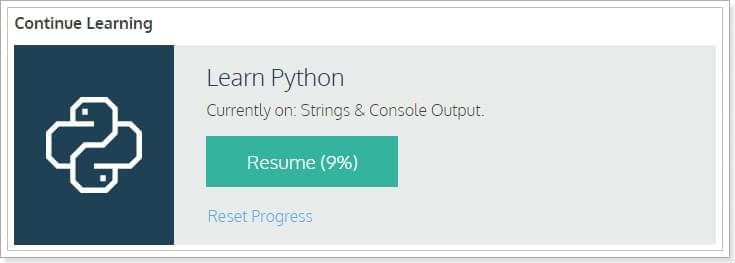

看到一篇報導指出「2017最受歡迎人工智能編程語言：Python第一」，我心中也是對Python傾慕已久，就趁著這個機會來玩玩Python這門程式語言吧！本篇文章紀錄從零開始學習Python的隨手筆記。
Quick Start
既然是從零開始，當然是從官方網站看起，先把該裝的東西裝起來，看一下基礎語法如何撰寫，做個如何架站的功課…等。
安裝
目前主流版本似乎是2與3，並且各自都有大量的擁護者，官方還列出了一份詳細的比較文件，但我只是來學習的，沒有興趣去搞懂為何會有這種分歧，索性就直接安裝最新版吧！(3.6.3)
語法
除了官方網站外，同事還推薦了個學習網站「codecademy」，裡面有豐富的教學與測驗讓使用者快速學習一門程式語言，嗯…最終進度停在了9%，未來看有沒有機會把它補完，現階段我就先邊做邊學就好☺

架站
找到了兩款不錯的Framework，分別是Django、Flask；Django快速開發、Flask輕量，都有各自的優點，最後我選擇了Django，原因是怕Flask太輕量讓我無法快速上手，Flask我們有緣下次再見😝
Django
這裡我偷了一個懶，因為此服務預計會上Heroku，然後又在Heroku看到了配置好的專案範本，於是就這麼用了，當然你也可以在「Django」自己從頭開始，差別應該是不大吧(我猜)，Heroku範本如下。
1 | git clone https://github.com/heroku/python-getting-started.git |
上手指南
大概列一下自己的學習順序：
- 瞭解預設專案內每個資料夾的用途與內部檔案的作用。
- 挑幾篇官方的Guide與網路上找中文資料對照看。
- 過程中任意修改程式來驗證所看到的教程。
- 訂定學習目標並在過程中逐步完成它(呼之即來揮之即去的LineBot)。
結語
不知道這篇文章會不會水分過多，因為我只記錄了過程中自己的大略思路與執行方向而已，但就我自己而言上手Python真的不難(有一點點程式底子)，大家也可以來玩玩看，嗯…晚點再來寫Bot實作篇。